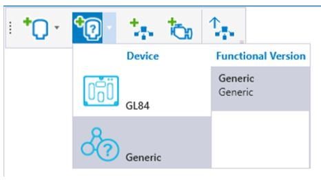
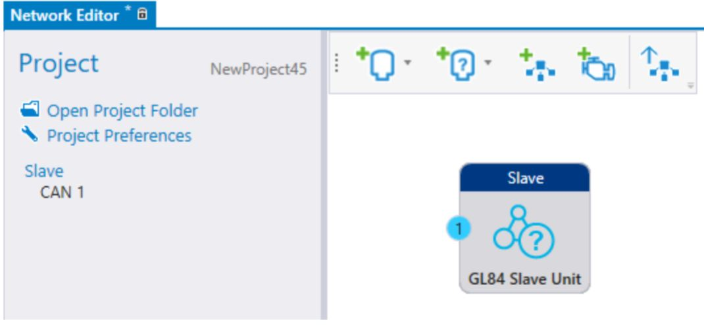
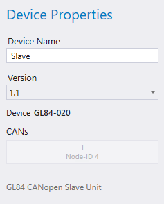

1. Select Add slave Device from the Network Editor.
The menu contains predefined slave devices and generic devices to create new types of slave devices. Devices added with Generic type will be added to the menu for further use.
When adding a generic device, a file browser opens to select a file for the added device. The device created from the selected file is added to Add slave Device menu
A slave device can also be added by dragging and dropping a file to the Network Editor.
Supported file formats are EDS, DCF, XDD, XDC

2. The added device appears in the Network Editor.

3. Selecting the device opens the Device Properties on the left.
Version shows the file version that is used to create the device. In case the Device Repository has multiple versions from the same device, the used file version can be changed here. When a new device is added, the newest version is selected by default.

Epec Oy reserves all rights for improvements without prior notice.
Source file topic200031.htm
Last updated 25-Jun-2025